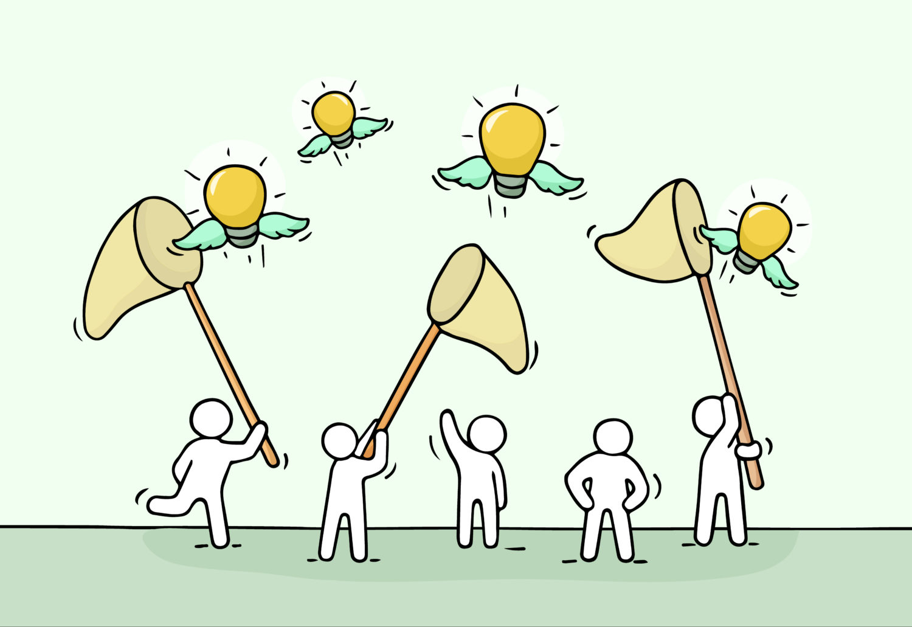
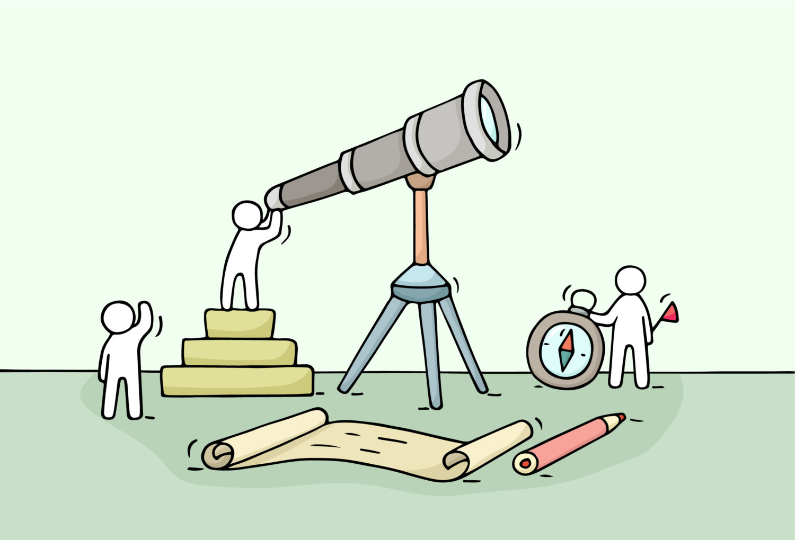

【2020年】これから稼げるビジネスとは【未来予想は、超簡単です】
こんにちは、ゆーだいです。
時代の波をみつつ、稼いできました。
月収８桁を超えたので、すこし安定しました。
さて、先日に下記のツイートをしました。
これから伸びる領域って、簡単に予想できます。例えば、次のとおり。
・ゲーム
・人の拡張
・VRやAR
・暗号通貨
・音声配信こんな感じ。投資家のお金を流れをみたら、分かります。僕はすべてに、小さくコミットしています。未来を見据えて、行動してますか😌
— マナブ@バンコク (@manabubannai) October 9, 2020
これから伸びる領域って、簡単に予想できます。例えば、次のとおり。 ・ゲーム ・人の拡張 ・VRやAR ・暗号通貨 ・音声配信 こんな感じ。投資家のお金を流れをみたら、分かります。僕はすべてに、小さくコミットしています。未来を見据えて、行動してますか😌
上記を深堀りします。
稼ぐ際には、かなり重要なテーマです。
これから稼げるビジネスとは【2020年】

繰り返しですが、下記のとおり。
{kind=link}
- ゲーム
- 人の拡張
- VRやAR
- 暗号通貨
- 音声配信
上記の分野で、なにかしらコミットしていますか？
僕は、すべての分野で「小さく張る」という感じで動いています。
ここを解説します。
ゲーム
ここは、間違いないですね。
下記は重要ですね。
- eスポーツ
- eスポーツ学校
- ゲームの配信者
- クラウドゲーム
- ゲームのサブスク化
まず「eスポーツ」に関してですが、世界的に加速していますよね。
日本はすこし出遅れているかもですが、僕が住んでいるバンコクだと、大会の賞金も大きかったりして、盛り上がっております。
eスポーツの学校とは
これからは、eスポーツの学校も増えるはず。
すでに数件は出てきており、さらに考えると「ゲームの先生」とかも必要になりますよね。
こういった「講師職」のニーズも高まります。
ゲーム配信者の未来と、クラウドゲーム
まず「クラウドゲーム」について解説すると、要するに「高性能PCがなくても、誰でも高品質なゲームができる時代」です。
こうなってくると、ゲームをする層が増えますよね。
そして、配信者の収入も上がる構造です。
ゲームのサブスク化について
最後に「ゲームのサブスク化」を解説します。
有名なサービスは、次のとおり。
- Xbox Game Pass（特定のゲームがプレイし放題）
- Apple Arcade（広告なしで大量のゲームをプレイ可能）
上記の感じで、サブスクが増えています。
海外勢と比べると、ちょっと狙いが違いますよね。
プラットフォームとしてのサブスクと、SONYの場合は「機能としてのサブスク」ですね。
僕は毎日、ゲームをする
ゲームは間違いなく伸びるので、僕はコミットしています。
コロナ期間では「毎日10時間のゲームプレイ」とかをしていました。
ゲームしつつ、市場をみつつ、考えています。
僕がゲームにフルコミットし始めたら、そこが稼げるタイミングかもです。
人の拡張
個人的に、かなり注目しています。
分かりやすい例が「ニューラリンク」ですね。
イーロンマスクさんが起業した会社で、脳ミソに電極を差し込みます。
そして「記憶障害、難聴、抑うつ、不眠、依存症、脳卒中、麻痺、発作」といった症状の回復を目指しています。
僕の思考：健全な人にも治療を
こちらのツイートのとおり。
現代の医療だと、基本的には「悪いところを治す」というのが主流ですよね。しかし、ここは変わりますよね。
これからは「予防医療」が進んでいき、その先には「人の拡張」が進んでいくはず。そうなってくると、もしかしたら「幻覚剤」といった選択肢が検討できるのかもです。個人的に注目の分野です😌— マナブ@バンコク (@manabubannai) October 9, 2020
ちょっと分かりづらいというか、、日本でこんなことを言ってるのは、ごく少数です。ほぼ居ませんね。
簡単に説明すると、幻覚剤とかの「体験」に着目しています。
たぶん伝わらないかもですが、僕は注目しています。
※この領域は、まだ研究が進んでいません。なので、現状は未知が多いです。
VRやAR
ここの領域は、Facebook、Apple、Microsoftが強いですね。
- Facebook：オキュラスシリーズを多数発売
- Apple：Appleグラスも、近いうちに発売予定
- Microsoft：ホロレンズが有名ですね
上記のとおり。
そして、僕が思うに「SNSの次に来るのは、VR世界のプラットフォーム」だと思っています。
レディプレイヤーという映画がありまして、これを見ると伝わるはず。
もしくは、、、例えば「すばらしい新世界」という小説をご存知ですか。
下記の小説ですが、発売日は1932年です。
こちら「2540年の社会」が描かれていますが、ここでも「バーチャル・リアリティ」が描かれています。
とはいえ、それ以上の存在感が「ソーマ」ですね。
VRやARの延長線には、こういったディストピア（＝理想郷の反対の意味）があるように、個人的には考えています。
思考停止して、幸福を感じれる世界ですかね。
暗号通貨
続いては暗号通貨です。
今後も投資を増やそうと思っており、あと4,000万くらいは投下予定です。
チャートを見つつ、定期的に購入しています。
なぜ、暗号通貨が伸びるのか
暗号通貨というより、デジタル通貨といった方がいいかもです。
あとセットで「ブロックチェーン技術」ですね。
こういった技術を使うと、既存の金融の仕組みを、アップデートすることができます。
しかしブロックチェーン技術を活用することで、セキュリティの自動化ができます。
要するに、人員削減につながるわけですね。
ヒューマンエラーを減らせるし、速度も早くなるし、間違いなく伸びるはず。
現状だと、中国では国家プロジェクトとしてデジタル通貨発行が進んでおり、カンボジアでも進んでいます。
タイだと、国債のブロックチェーン化が進んでおり、日本でも日銀が「CBDC」というデジタル通貨の取り組みをスタートしましたね。
音声配信
音声配信に関しては、わりとすぐにブームが来るかな、、と思ったりしています。
日本でどこまで伸びるか微妙ですが、間違いなくチャンスですね。
音声コンテンツの将来性とは【結論：伸びる／僕が始めた理由＆分析】
僕が音声メディアを始める理由。理由①: 自分がユーザーである。理由②: AirPodsの威力が強い。理由③: YouTubeの衰退を意識。このあたりですね。音声メディアの将来性を考察します。波乗りして稼ぐ方法にも、言及します。
上記のとおり。
そして僕は「StandFM」で配信をしていますが、参考までにデータ公開します。
問題なさそうなので、ラジオ収益を公開します😌
結論として「約４万円」でした。ラジオの公開本数は「21本」です。トータルの再生回数は「13万回」ほど。
つまり、１回の再生で「約0.3円」ですね。ほぼ準備せず、かつ一発撮りで稼げたので、わりと驚きました。ラジオは、想像以上に収益性が高い— マナブ@バンコク (@manabubannai) October 10, 2020
上記のとおりで、思ったりよりも収益が大きかったです。
わりと狙い目なことが、わかるかなと思います。
チャンスありですね。
稼げるビジネスを、予想する方法【簡単】

めっちゃ簡単なのですが、それは「お金の流れ」ですね。
{kind=link}
伸びる分野に、お金が流れる
資本主義はシンプルで「時代の流れ＝お金の流れ」だと思います。
というのも、GAFA＋Microsoftの時価総額を合計したら、日本の東証1部を超えますので。
GAFA＋Microsoftの時価総額、東証1部超え 560兆円に
株式市場で巨大IT（情報技術）に資金が集中している。米マイクロソフトや米アップルなど時価総額上位5社の合計が、東証1部約2170社の合計を上回った。テレワークやインターネット通販など新型コロナウイル
これほどまでに、GAFAは巨大です。
そして研究投資、技術投資にも積極的です。
こうなってくると、もはや無双していますよね。
みなさんの生活でも、GAFAのサービスが無くなったら、かなり困る状態だと思います。
どうやって稼ぐか
伸びる分野は分かります。じゃあ、どうするか。
結論は「はやめに参入しておく」だと思います。
僕の状況をまとめます
- ゲーム → 毎日プレイしています
- 人の拡張 → ベンチャー企業に投資済み
- VRやAR → 最新ガジェットが出たら買います
- 暗号通貨 → 5,000万円を投資します
- 音声配信 → すでに配信中。収益化も完了済み
上記の感じで、すべてに「少しずつの注力」をしています。
注意点としては「フルコミットは危険」だと思っています。
それだときついので、すこしだけコミットがいいかなと思います。
しかし、大半の人は動かない
結論は、次のとおり。
多くの人は「稼げる」と分かってから動き出すので、稼げません。稼いでる人は「これはいけるかも…」という状態で動くので、先行者優位が働く。
シンプルな構造ですが、この現象をよく見かける。安心してから動き出すんじゃなくて、まず動いてみて、自分で検証することが大切😌— マナブ@バンコク (@manabubannai) October 7, 2020
上記のとおりで、例えば「暗号通貨はチャンスです」といっても、みなさん動きません。
ビットコインの価格が急上昇したら、たぶん皆さん動きます。
それだと、ちょっと遅いんですよね。
なぜなら、僕がすでに収益化できており、すぐに稼げそうだから。
そういった感じで動いてもいいですが、もうワンテンポ早いと、さらにチャンスが増えたりします。
とはいえ、音声メディアは、まだまだ余裕でチャンスばかりです。狙いましょう。
失敗しつつ、ネタを増やそう
というわけで、今回は以上にします。
最後に、こちらのツイートをご覧ください。
新しいモノ、新しいサービスは、すぐ体験すべき。最近の例だと、僕は「ストレス計測できる、スマートウォッチ」を買いました。
結果はどうか？ 今は「タンスの中」です。要するに、使っていない。理由はまた解説しますが、こうやって失敗もします。でも、すべての経験は発信のネタになる。問題なし😌— マナブ@バンコク (@manabubannai) October 10, 2020
上記のとおりで、挑戦と失敗はセットです。
スマートウォッチは、約３万円ほどしました。
以前にはVRキットも買ったのですが、それもタンスの中です。
色々と試すと、お金は減ります。
しかし、そのお金と引き換えに「新しい体験」ができますよね。
体験をすると、サービスの「本当の質」に気づけたりします。
このように、未来を予想しつつ、同時に体験しつつ、予想の質を高めるイメージです。
というわけで、コツコツとやっていきましょう。
世の中には、チャンスばかりです。
P.S：普段の僕は「Twitter」を軸に発信しています。また最近は「Webマーケ教材」の作成に注力しており、ネットで稼ぐスキルを学べます。ブログの更新通知はtwitterからお知らせします。